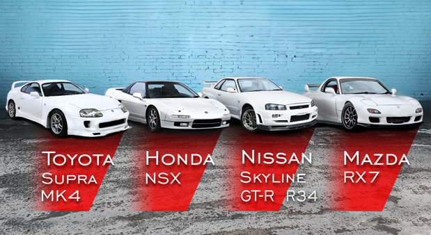

Jeśli zapytał byś normalna, niezwiązaną z motoryzacja osobe o japonie zapewne opowiedziała by ci coś o tamtejszej kulturze, pieknych krajobrazach i o sushi, ale zadajac to samo pytanie "petrolhead'owi " to pierwsze co bys usłyszaj to coś na temat 2jz'a, wanklu z rexa, legendarnej godzilli lub o innym jdm'ie. Nie mówi ci to zbyt wiele? Nic straconego odwiedź powyższe linki i dowiedz sie cos o tych "wariatach"
